長野の赤地蔵を巡る旅、お次はレンタカーを借りて郊外の赤地蔵事情を調べてみる事にする。
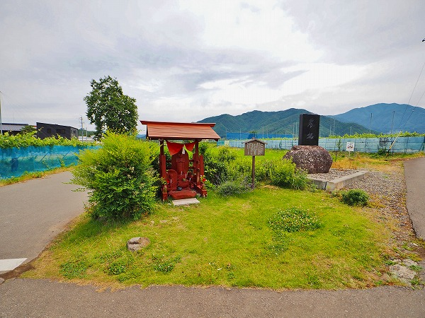
最初に訪れたのは長野市の東にある
須坂市野辺の赤地蔵。
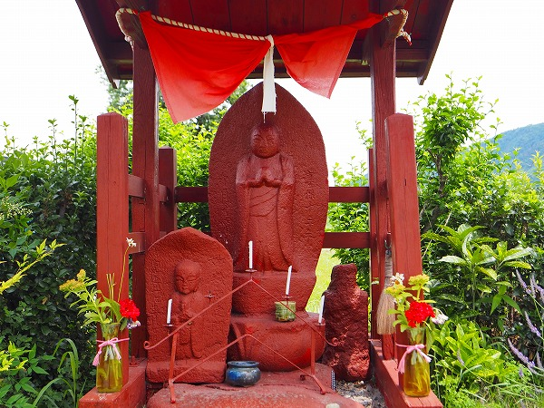
屋根も柱も地蔵も真っ赤っかに塗りこまれていた。
説枚書きによると願い事をした人が
願いが叶うと御礼としてベンガラで赤く塗るのだという。
「よくお地蔵さんや馬頭観音を赤く塗ることがありますが、赤が神聖な色であり、魔除けとなるからであります」
と説明されていたが…
よく塗る？
この地方ではよく塗るのかも知れないが、それ、長野だけですから！
兎にも角にも
地蔵を赤く塗る主体は祈願する庶民であることは判った。
そして願いが叶った御礼に赤く塗ることが判った。
つまり京都の地蔵盆のように地域ぐるみで塗るのではなく、あくまでも個人の信仰心の発露による行為なのだ。
この習俗の基本的な構造が見えてきたぞ。
次は同じく須坂市臥竜にある
上組の地蔵尊。
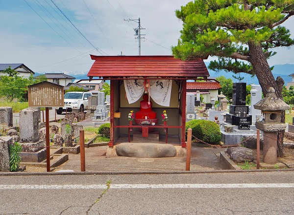
墓地の入口にある地蔵堂。
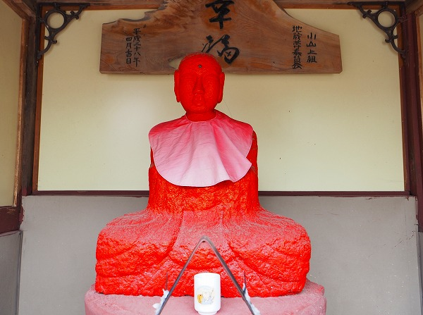
ここも見事なまでに真っ赤に塗られてました。
建立は宝暦13（1763）年。
以前は善光寺に至る街道沿いにあったという。
善光寺と赤地蔵は何か関係があるのだろうか？
様々な疑問を膨らませつつ次の赤地蔵へと向かう。
お次は須坂の市街地にほど近い
新町不動尊。
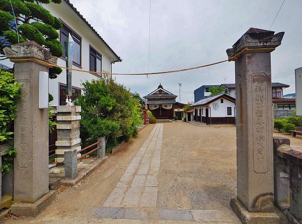
ここには参道沿いに幾つかの石仏や石塔が並んでいる。
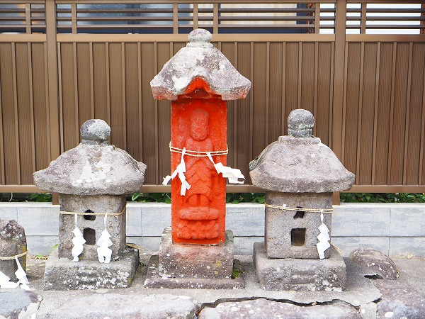
その中のひとつ。
庚申さま。
先程の須坂市野辺の赤地蔵の説明書きには地蔵や馬頭観音が「よく」塗られているとあったが、庚申さまも赤く塗られる対象なのだろうか。
一般的に赤く塗る、という行為は疱瘡除けの意味合いが多い。
鍾馗様や猩々、あるいは達磨や金太郎なども赤いという理由で疱瘡除けの神様とされていた。
それがこの地方では偶々地蔵や馬頭観音、あるいは庚申様（青面金剛のことね）に転化されたのだろうか。
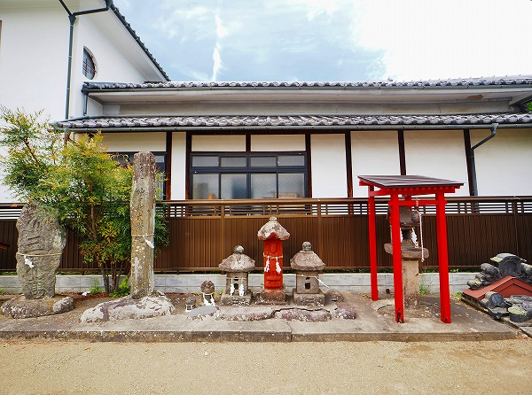
全部の石仏や石祠が塗られているのなら、それはそれで 「まあ、塗りたくなるよねー」 とも思うのだが、塗られているのは庚申さまだけ。
そこに何らかの明確な意図があるはずなのだ。
しかし今のところ、それが何かはまだ判らない。
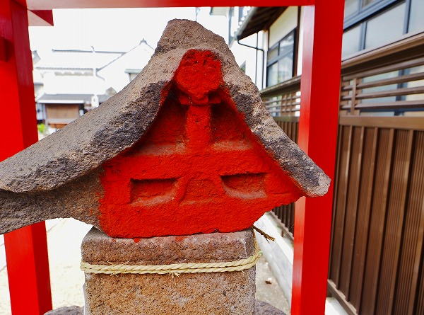
唯一、庚申以外で赤く塗られていたのは屋根の架かっていた石祠の妻側。
これは何を意味するのか。
山梨県の道祖神信仰と何となく似ているような気がする。。
再び長野市に戻る。
ここからは
長野市街地の東～北エリアの赤地蔵を巡る。
しなの鉄道の北長野駅周辺を巡ってみる。
国道406号線（平林街道）沿いにある
法輪山観音庵の地蔵堂。
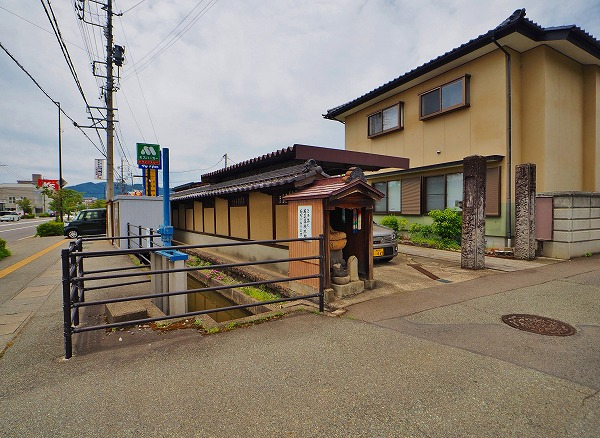
モスバーガーやケーズデンキが並ぶ郊外っぽい風景。
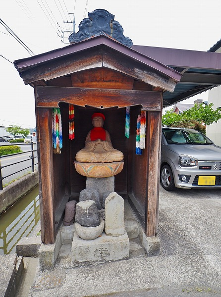
地蔵堂の中。
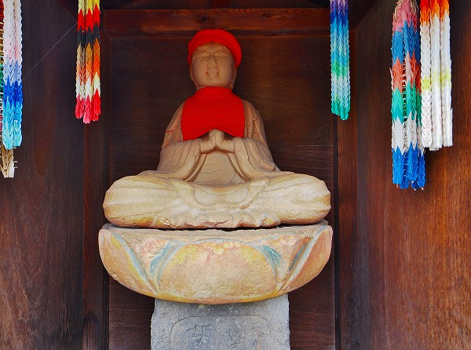
うっすら彩色がされているお地蔵さんがおりました。
元赤地蔵、ということで。
観音庵のすぐ近く、
東和田十王堂。
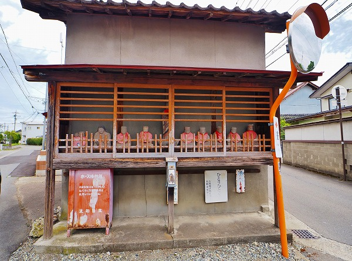
住宅街の中にある五差路の辻にある十王堂。
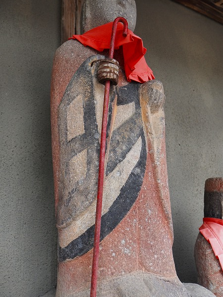
中央に
赤く塗られたお地蔵さんが立っていた。
とはいえ色は薄くなり、袈裟の部分は黒で色分けされていた。
こうなるとべったり塗った赤地蔵とは別ジャンルなのかも知れない。
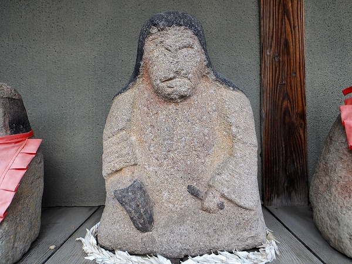
他の十王や奪衣婆らしき像もよーく見ると
うっすら赤く塗られていた痕跡が見られる。
詳しく見たかったのだが、ココ車停めるところが全くないので、路駐してマッハで見たので良く判りませんでした。
次に訪れたのは
青木地蔵。
ここも住宅街の中にある。
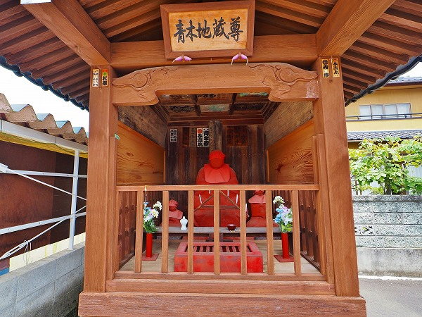
絵に描いたような見事な赤地蔵。
やっぱり赤地蔵はこうでなくちゃ！
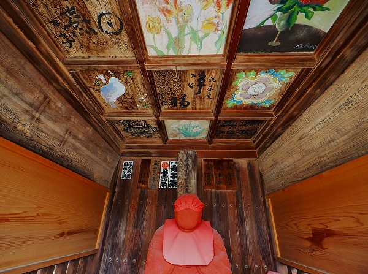
天上の格子には様々な天井画が描かれていた。
あまり統一感のないのもまた面白い。
次は北長野駅の近くの
中越地蔵尊。
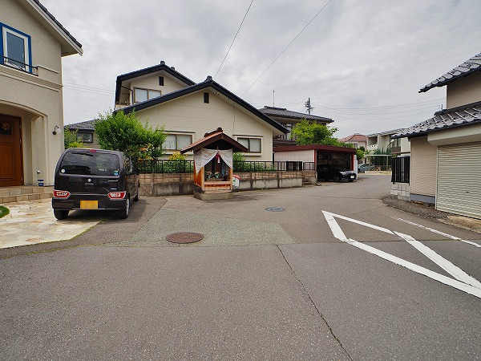
変形T字路のエアポケットのような不思議な場所に地蔵堂が建っている。
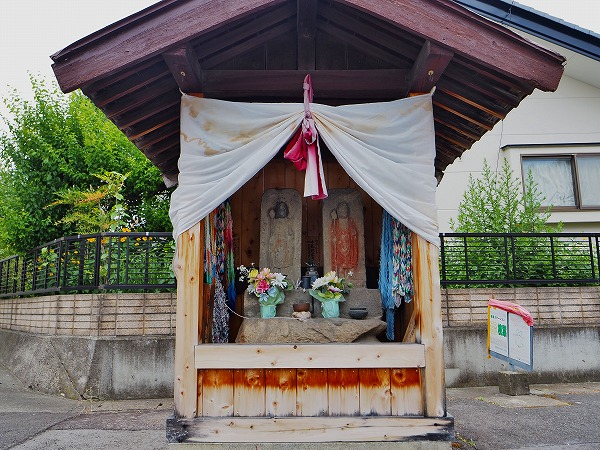
地蔵堂。
比較的最近再建されたようだ。
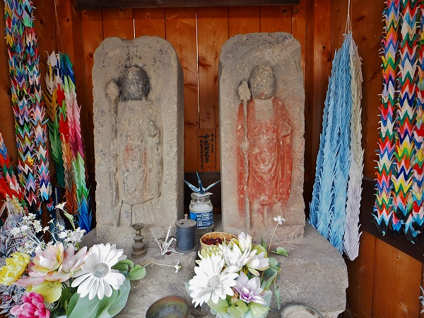
2体の地蔵像。
右の地蔵像は赤く塗られているのが判る。
よく見ると左側の地蔵像にもうっすら彩色されているのがお判りいただけるだろうか。
今どきの住宅街の中にあって異彩を放つ存在感だった。
お次は長野市三輪の
延命地蔵尊。
善光寺にもほど近く、赤地蔵；その1で紹介した地蔵庵にも近い、地鉄の善光寺下駅、長野の繁華街椿堂駅にも近い場所だ。
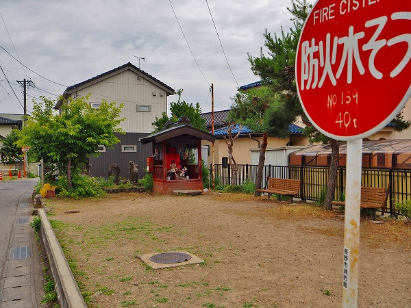
小綺麗な家が並ぶ住宅街の一画に広場がある。
その一画に地蔵堂があるのだ。
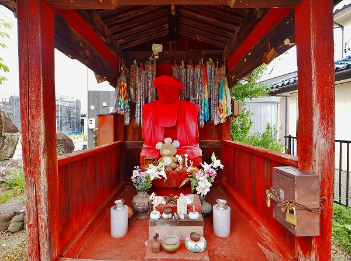
赤いお堂に赤い地蔵。
ついでに赤い衣に赤い帽子。
全てにおいて真っ赤かだ。
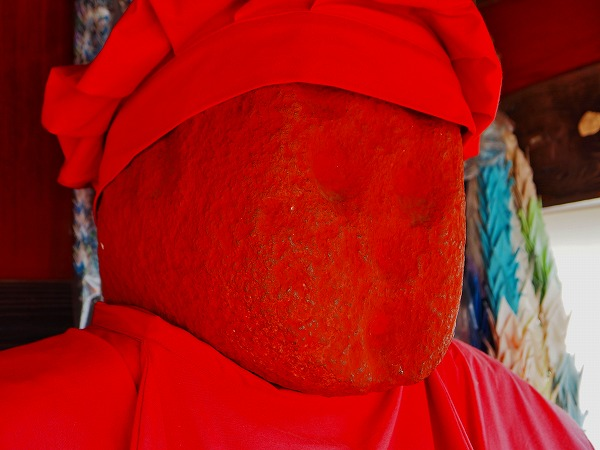
説明板によるとこのお地蔵さん、かつては旭町にあったという。
旭町というのは現在、合同庁舎や裁判所などがある長野市の官公庁街だ。
明治初期、刑務所建設にあたり、この地に移転してきたらしい。
距離にして1.5㎞東に移動している。結構な距離を移動しましたなあ。
何故この地に移転したのか、という経緯は判らないが、それでも多くの人々に信仰されていたようだ。
顔は摩滅したのか最初からそうなのか
のっぺらぼう状態。
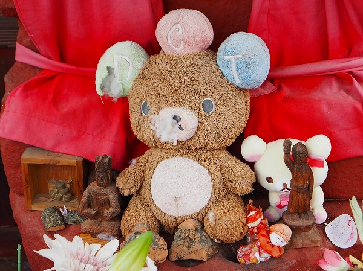
お地蔵さんのお膝元にはぬいぐるみやミニ仏像が供えられていた。
続いて北上して同じく
三輪の大定院。
赤地蔵；その1で訪れた新町の赤地蔵にもやや近い。
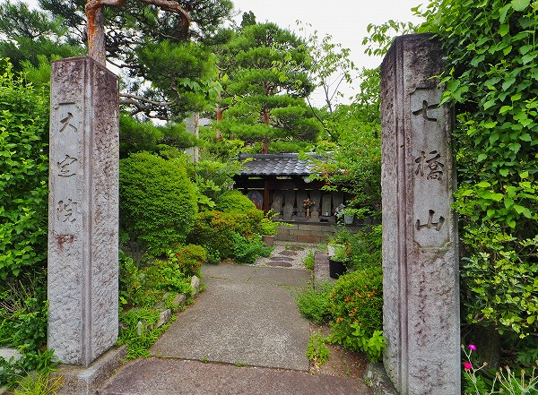
目の前に細い用水が流れる緑豊かな寺だ。
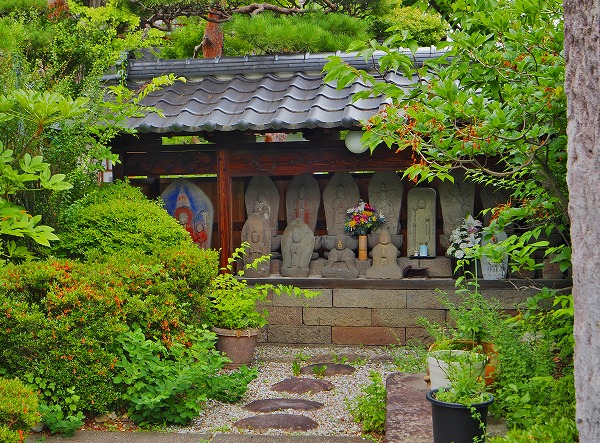
境内に入ると正面に地蔵堂がある。
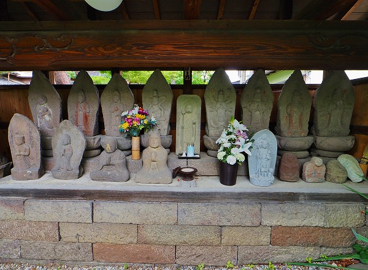
石仏が十数体並んでいた。
その中にはうっすら赤く塗られた痕跡のある石仏もちらほら。
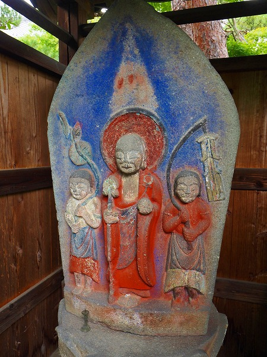
その中でも一際インパクトがあったのはこちらのお地蔵さん。
いわゆるオーソドックスな赤地蔵とは違うが、赤の他に靑や白も使い、カラフルな印象だった。
今度はやや東に移動する。
つまり長野市街からは少し離れる。
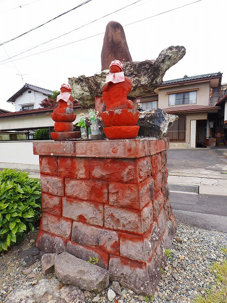
時丸塚と呼ばれている。
円通寺の入り口にあるが寺との関係は不明だ。
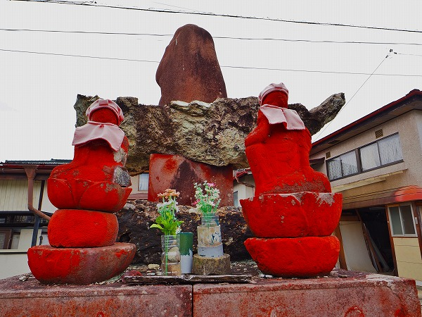
台座まで含めて赤く塗られている。
台座のボリュームがあるだけにインパクトは大きい。
しかも2体のお地蔵さんの背後にある自然石のようなものまで赤く塗られており、
「とにかく赤く塗らねば！」という気合が伝わってくる。
お次は長野市植松の
昌禅寺。
善光寺からは約3キロほど北にある立派な寺院だ。
境内はモミジだらけで紅葉の時期にはさぞかし綺麗な事だろう。
また境内の大量の弘法大師やその他
ユニークな石仏も数多くあり、見ごたえのある寺だ。
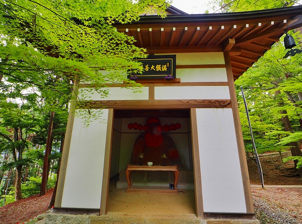
そんな一画に建つ地蔵堂。
扁額には満願大菩薩とあった。
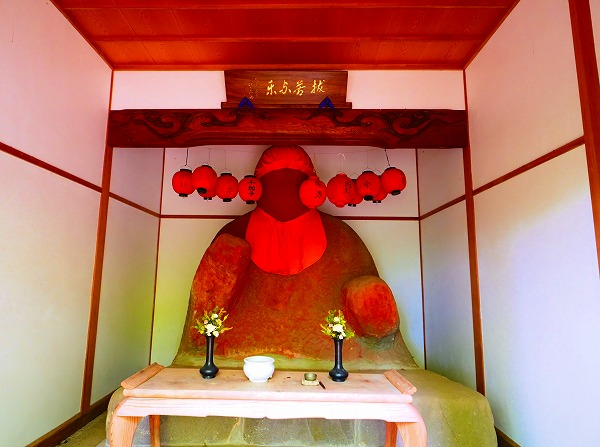
中には
巨大な赤地蔵が鎮座している。
高さ280センチ幅106センチ。
大仏赤地蔵、といって良い大きさだ。
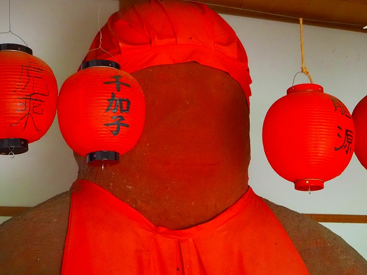
顔は先程の三輪の延命地蔵尊同様、のっぺらぼう状態。
でもいいんです。
前代未聞の赤大仏に興奮しきりでございます！
今回の旅で最大の収穫だった。
お次は市内植松の
十王堂。
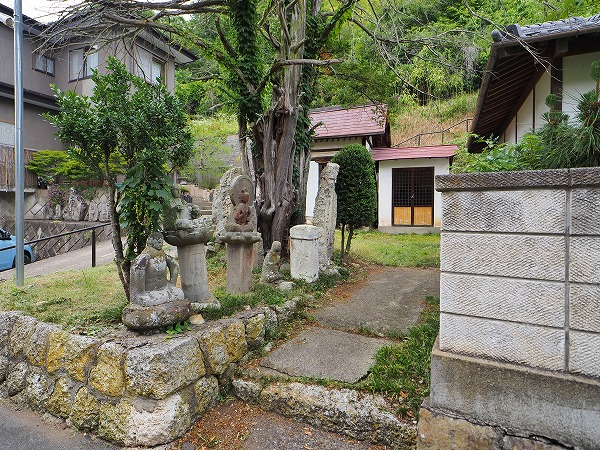
善光寺の北、1キロに位置する小さなお堂だ。
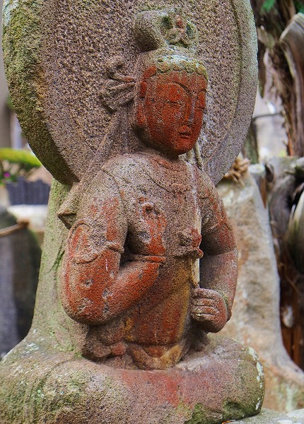
お地蔵さんではないが、観音サマが赤く塗られていた。
この「非地蔵、赤く塗られる問題」は以降の宿題としつつ、更に深淵なる赤地蔵の世界に突入する。